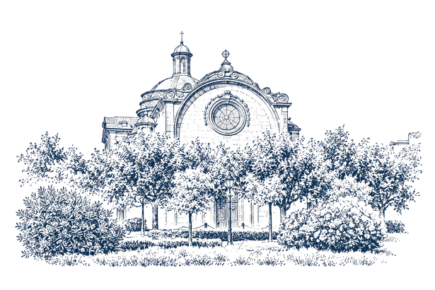

12:30 h · Ceremonia religiosa
La ceremonia

Capilla Castrense de la Ciudadela
En una capilla histórica, rodeada por los jardines de la Ciutadella, comenzaremos juntos este día tan especial.
Plaça de Joan Fiveller, s/n · Parc de la Ciutadella · Barcelona
Ver en Google Maps ↗Cómo llegar y aparcar
En coche: entrad al parque y, en la barrera de control, avisad por el interfono de que venís a la boda.
En metro: Barceloneta (L4) o Arc de Triomf (L1).
Os rogamos llegar a las 12:15 h.
La ceremonia comenzará puntualmente a las 12:30 h.